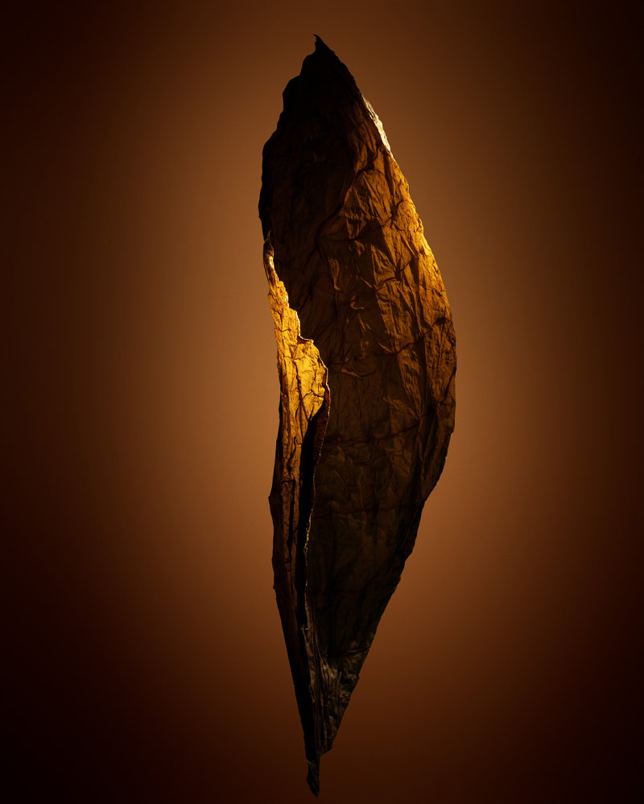
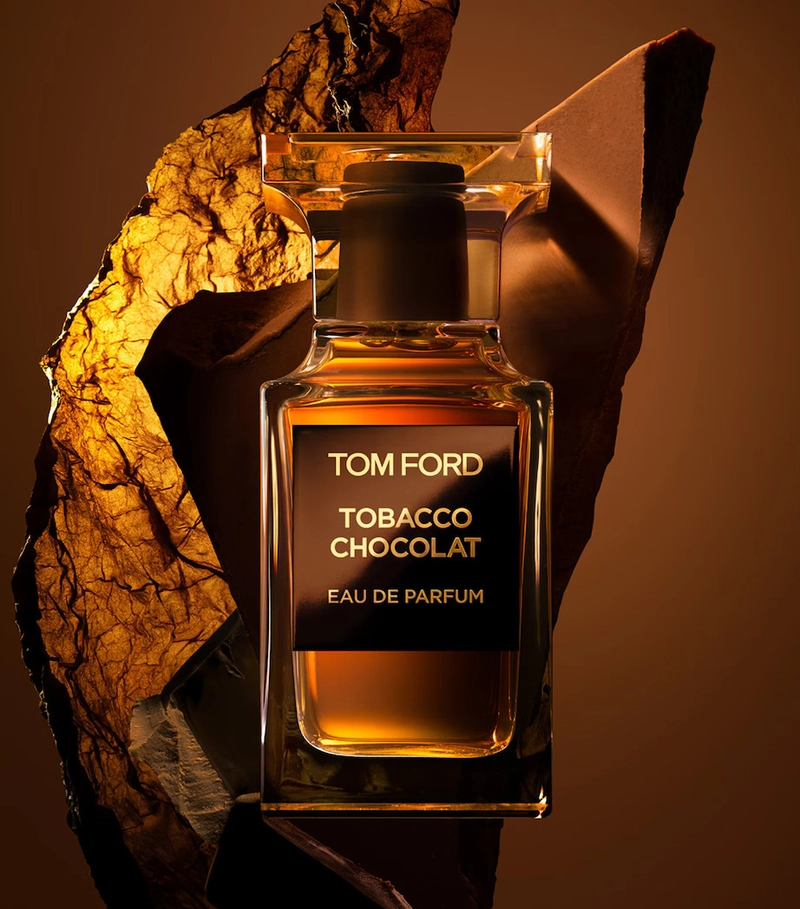
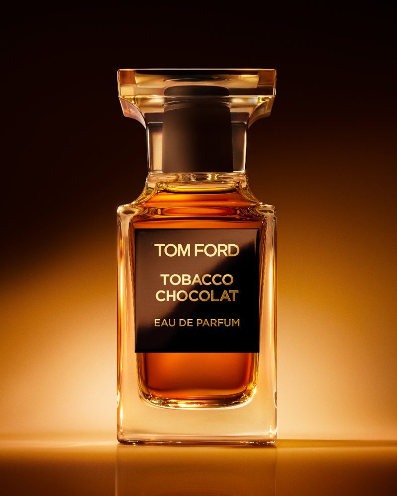

Tom Ford · Private Blend
Kavrulmuş tütün yaprağı,
ve bitter çikolata.
Tom Ford'un
yeni
kokusu

Tobacco Chocolat
Eau de Parfum

Üst notalar
Portakal · Akigalawood
Kalp notaları
Bitter Çikolata · Kakao
Dip notalar
Tütün · Paçuli · Peru Balsamı
Tobacco Vanille'in
karanlık kardeşi.
Tobacco Chocolat
Dekant seçenekleriyle
şimdi Splitcim'de